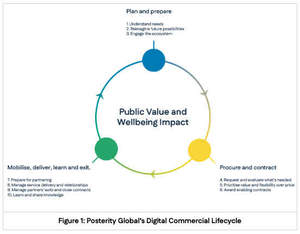

Trade Mark Journal No.2025/017 25 April 2025
UK00004184735 5 April 2025 (9,35,41)

- Class 9
- Business software; Software for Smart Contracts; Artificial intelligence software; Artificial intelligence apparatus; Artificial intelligence software for healthcare; Artificial intelligence and machine learning software; Artificial intelligence software for driverless cars.
- Class 35
- Business management of models; Consultancy regarding business organisation and business economics; Business analysis; Business management; Commercial business management; Business research for new businesses; Business planning and business continuity consulting; Development of concepts for business economy; Business strategy services; Business consultancy; Business organisation; Business studies; Business management of actors; Business organization consultancy; Business organization and operation consultancy; Business management advice relating to manufacturing business; Business consulting; Business management and enterprise organization consultancy; Business management for a trade company and for a service company; Business research; Research (Business -); Business consulting for enterprises; Business management for shops; Business organization consulting; Consultancy (Professional business -); Professional business consultancy; Business consultancy (Professional -); Business strategy development services; Business analysis of markets; Business project management; Business and market research; Business management organisation; Business representative services; Business organization advice; Business assistance relating to business image; Business networking; Business profit analysis; Business appraisal; Business management analysis; Business marketing consultancy; Business management and organization consultancy; Business process management; Business information for enterprises; Business organisation consulting; Business marketing services; Business management of an airline company; Economic forecasting for business purposes; Forecasting (Economic -) for business purposes; Business management of entertainers; Business planning; Business management and consultancy; Business management consultancy; Business promotion; Business analysis services; Business efficiency studies; Professional business consulting; Business organization and management consulting; Business project management services; Vehicle fleet (business management of a -) [for others]; Business management services; Business management of hotels; Hotels (Business management of -); Business process management consultancy; Business expertise; Business management for freelance service providers; Assistance in franchised commercial business management; Business management and consulting; Business management consulting; Business planning services for enterprises; Business management of theaters; Business organizational consultation; Business management of restaurants; Business consultancy to firms; Business administration; Advisory services relating to business management and business operations; Analysis of business management systems; Preparation of business profitability studies; Assistance to commercial enterprises in the management of their business; Business strategy and planning services; Business organisation and management consulting; Business organisation consultancy; Business research services; Business appraisals; Appraisals (Business -); Business process management and consulting; Business consulting services for digital transformation; Business process re-engineering; Business management of musicians; Business file management; Business management and organization consultancy services; Business consultancy services for digital transformation; Business consultancy to individuals; Business administration consultancy; Commercial assistance in business management; Business appraisal consultancy; Help in the management of business affairs or commercial functions of an industrial or commercial enterprise; Business surveys; Surveys (Business -); Business introduction services; Business statistical studies; Statistical studies (Business -); Business partnership search; Business information; Information (Business -); Economic studies for business purposes; Strategic business analysis; Business intermediary services; Business appraisals and evaluations in business matters; Business brokerage services; Professional business consultancy services; Business advice; Consulting services in business organization and management; Business management and organisation consultancy; Business management organisation consultancy; Business organisation and management consultancy; Management of business [for others]; Business management of hospitals; Business accounts management; Business appraisal services; Computerised business research; Business organisation advice; Planning concerning business management, namely, searching for partners for amalgamations and business take-overs as well as for business establishments; Strategic business consultancy; Procurement services; Procurement of contracts concerning energy supply; Procurement of contracts [for others]; Procurement of contracts for the purchase and sale of goods and services; Procurement of contracts for others relating to the sale of goods; Procurement of contracts for the purchase and sale of goods and services for others; Consultancy services relating to the procurement of goods and services; Outsourcing services in the nature of arranging procurement of goods for others; Advisory and consultancy services relating to the procurement of goods for others; Procurement of goods on behalf of other businesses; Procurement services for others [purchasing goods and services for other businesses]; Procurement services for others relating to office requisites; Business consultancy services relating to the supply of quality management systems; Procuring of contracts for the purchase and sale of goods; Supply chain management services; Recruitment and personnel management services; Competitive intelligence services; Market research and market analysis; Market campaigns; Development of market surveys; Market research; Market segmentation consultation; Market prospecting; Market analysis; Market research services; Market research and business analyses; Market reporting services; Market assessment services; Market intelligence services; Market reporting consultancy; Market studies; Analysis of markets; Market research studies; Interviewing for market research purposes; Market opinion polling studies; Analysis of market research data and statistics.
- Class 41
- Business training; Business mentoring services; Publication of work manuals for business management.
Posterity Global Group Limited